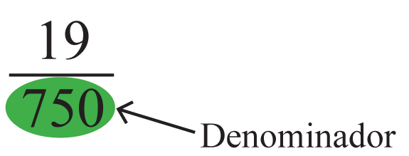
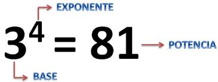

Matemática
Ciencia que estudia las relaciones entre cantidades, magnitudes y propiedades, y las operaciones lógicas
mediante las cuales se pueden deducir cantidades, magnitudes y propiedades desconocidas

Suma
La suma es una operación matemática básica que combina dos o más cantidades para obtener un resultado total.

Resta
La resta es una operación matemática que se utiliza para encontrar la diferencia entre dos cantidades.

Multiplicación
La multiplicación es una operación matemática que implica combinar o repetir una cantidad por otra cantidad.
Se representa con el símbolo "x" (2x3=6) o mediante un punto «.» (2.3=6)

Propiedades
Las propiedades de las operaciones son reglas matemáticas que se utilizan para determinar como se deben
realizar las operaciones en una expresión matemática. Las propiedades matemáticas se usan para simplificar
expresiones algebraicas.

Asociativa
En el caso de la suma, la propiedad asociativa indica que la forma en que se juntan los sumandos no incide en
el resultado de la operación.
Lo mismo ocurre con las multiplicaciones ya que, en este caso, el resultado no depende del agrupamiento de los
factores.

Conmutativa
En matemáticas, la propiedad conmutativa o conmutatividad es una propiedad fundamental que tienen algunas
operaciones según la cual el resultado de operar dos elementos no depende del orden en el que se toman. Esto
se cumple en la adición y las multiplicaciones ordinarias: el orden de los sumandos no altera la suma, o el
orden de los factores no altera el producto.

Distributiva
La propiedad distributiva afirma que la multiplicación de un número por una suma es igual a la suma de las
multiplicaciones de dicho número por cada uno de los sumandos.

Elemento neutro
Un elemento neutro tiene un efecto neutro al ser utilizado en las operaciones. Al operar cualquier elemento
del conjunto con el elemento neutro el resultado es el elemento original.

División
La división es una operación matemática que consiste en repartir o distribuir una cantidad en partes iguales.
Se representa con el símbolo "/" (6/2=3) ó «÷» (6÷2=3) ó “:” (6:2=3) ó "|___" ("6|_2_" )
|3

Dividendo
El dividendo en una división exacta es el número que ha de dividirse por otro.

Divisor
El divisor en una división es el número entre el que se ha de dividirse otro.

Cociente
Es el resultado que se obtiene al dividir una cantidad por otra

Resto
El resto de una división es el número que queda cuando la división no es exacta.

Números
Un número es un concepto abstracto que se emplea para contar (cantidades), medir (magnitudes) y etiquetar.

Naturales

Números naturales N
Los números naturales son aquellos símbolos que permiten representar la cantidad de elementos que tiene un
conjunto. Como los números naturales sirven para contar no toman en consideración al número cero, pero como se
trata de un conjunto que no termina nunca, decimos que ℕ es un conjunto infinito.

Enteros

Números enteros Z
Los números enteros son el conjunto numérico que abarca la totalidad de los números naturales, sus inversos
negativos y el cero. Es decir, se trata de los números que se utilizan para contar, junto con sus opuestos de
signo negativo (1 y -1). Normalmente, los enteros negativos se escriben con su signo (-), cosa que no hace
falta para los positivos, pero puede hacerse en ocasiones para resaltar la diferencia (+1 y -1).

Conjunto
Agrupación de diferentes elementos que comparten entre sí características y propiedades semejantes.

Conjunto de números naturales
Es la colección de todos los números naturales

Conjunto de números enteros Z
El conjunto de números enteros se corresponde con la letra Z, proveniente del vocablo alemán zahl (“número” o
“cantidad”). Se lo suele representar como una recta numérica, con el cero ubicado en el medio y, a partir de
él, los números positivos (Z+) desplegados hacia la derecha y los números negativos (Z-) desplegados hacia la
izquierda, en ambos casos extendiéndose hasta el infinito.

Conjunto de números Q
Es la colección de todos los números Q

Conjunto de números irracionales I
Los números irracionales son aquellos que no pueden ser escritos exactamente como una fracción simple de dos
números enteros.
Tienen decimales infinitos y no periódicos, lo que significa que después del punto decimal, los números siguen
sin repetir un patrón fijo.

Conjunto de números reales R
El conjunto de los números reales está formado por otros números como los naturales, enteros, racionales e
irracionales.

Par
En matemáticas, un número par es un número entero que es divisible entre dos.

Impar
Los números impares son aquellos que no se pueden dividir exactamente en dos partes iguales o que no son
divisibles por 2.

Igual
La función principal que desempeña el signo de igual (=) es indicar la igualdad matemática.

Diferente
Es un símbolo especial usado para mostrar que un número no es igual a otro.

Decimal
Un número decimal es aquel que cuenta con una parte entera y una parte fraccionaria, separadas entre sí por
una coma (,) o por un punto (.).
El número 5,8, por ejemplo, tiene una parte entera (5) y una parte fraccionaria o decimal (0,8).

Mayor que
Es un símbolo matemático que denota una desigualdad entre dos magnitudes o números.
La forma ampliamente adoptada de dos trazos de igual longitud que se conectan en un ángulo agudo a la derecha,
>, se ha encontrado en documentos que datan de la década de 1560.
En la escritura matemática, el signo mayor que generalmente se coloca entre dos valores que se comparan y
significa que el primer número es mayor que el segundo número.

Menor que
Es un símbolo matemático que denota una desigualdad entre dos valores. La forma ampliamente adoptada de dos
trazos de igual longitud que se conectan en un ángulo agudo a la izquierda (<) se ha encontrado en documentos
fechados ya en la década de 1560. En la escritura matemática, el signo menor que generalmente se coloca
entre dos valores que se comparan y significa que el primer número es menor que el segundo número.

Fracción
En matemáticas, una fracción, número fraccionario, (del vocablo latín frāctus, fractĭo -ōnis, roto, o
quebrado o separado) es la expresión de una cantidad dividida entre otra cantidad; es decir que representa
un cociente no efectuado de números.
En una fracción común a/b el denominador "b" expresa la cantidad de partes iguales que representan la
unidad, y el numerador "a" indica cuántas de ellas se toman.

Numerador
El numerador es el número superior de una fracción e indica el número de partes elegidas.


Denominador
El denominador indica el número de partes en que se ha dividido la unidad y tiene que ser distinto de
cero.


Raíz
En matemáticas, el símbolo radical, signo radical o símbolo de raíz es un símbolo de la raíz cuadrada o
raíz de orden superior de un número.

Ecuación
Una ecuación es una igualdad algebraica en la cual aparecen letras con valor desconocido. El grado de una
ecuación viene dado por el exponente mayor de la incógnita. Solucionar una ecuación es determinar el valor
o valores de las incógnitas que transformen la ecuación en una identidad.

Despeje
Acción de separar una incógnita o variable de otras cantidades que la acompañen mediante el uso de
procedimientos de cálculo

Sustitución
Es un procedimiento utilizado para resolver determinados tipos de ecuaciones, reemplazando una variable
por una expresión en función de otra variable, lo que permite transformar la ecuación inicial en un tipo
cuya resolución se conoce.

Potenciación
Es una operación matemática que consiste en multiplicar un número por sí mismo, la cantidad de veces que
lo indique otro número.


Exponente
El exponente de una potencia indica el número de veces que se multiplica la base.


Base
La base de una potencia es el número que se multiplica por sí mismo